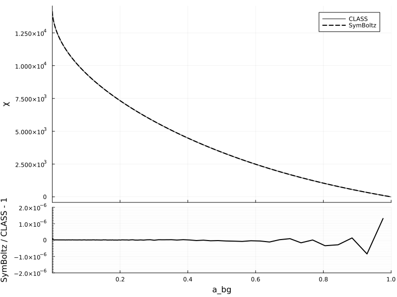
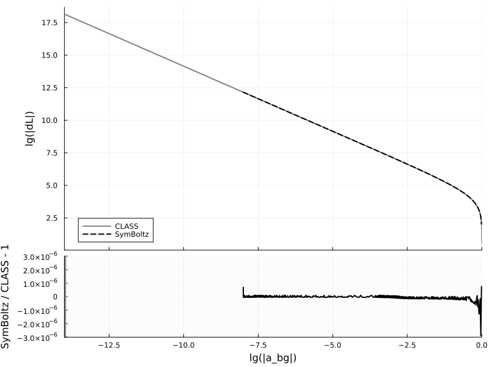
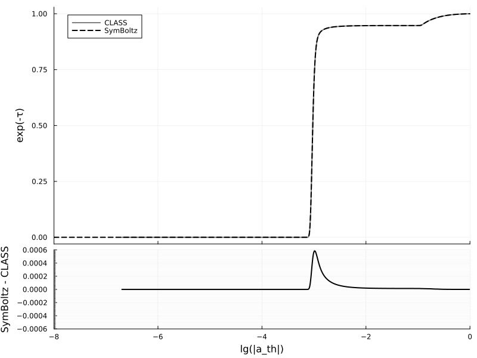
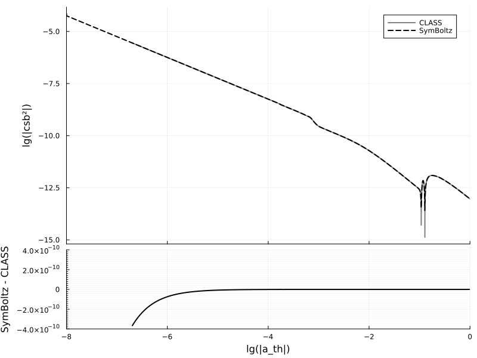

Comparison to CLASS
This page compares the results from SymBoltz to those from the fantastic Einstein-Boltzmann solver CLASS for the ΛCDM model.
Setup
using SymBoltz
using ModelingToolkit
using DelimitedFiles
using DataInterpolations
using Unitful, UnitfulAstro
using Plots
lmax = 6
M = ΛCDM(; lmax, K = nothing)
pars = parameters_Planck18(M)
prob = CosmologyProblem(M, pars)
function run_class(in::Dict{String, Any}, exec, inpath, outpath)
merge!(in, Dict(
"root" => outpath,
"overwrite_root" => "yes",
))
in = sort(collect(in), by = keyval -> keyval[1]) # sort by key
in = prod(["$key = $val\n" for (key, val) in in]) # make string with "key = val" lines
mkpath(dirname(inpath)) # create directories up to input file, if needed
write(inpath, in) # write input string to file
mkpath(dirname(outpath)) # create directories up to output file, if needed
return run(`$exec $inpath`) # run
end
function solve_class(pars, k; exec="class", dir = mktempdir())
inpath = joinpath(dir, "input.ini")
outpath = joinpath(dir, "output", "")
k = NoUnits(k / u"1/Mpc")
in = Dict(
"write_background" => "yes",
"write_thermodynamics" => "yes",
"background_verbose" => 2,
"output" => "mPk, tCl", # need one to evolve perturbations
"k_output_values" => k,
"ic" => "ad",
"modes" => "s",
"gauge" => "newtonian",
# metric
"h" => pars[M.g.h],
# photons
"T_cmb" => pars[M.γ.T₀],
"l_max_g" => lmax,
"l_max_pol_g" => lmax,
# baryons
"Omega_b" => pars[M.b.Ω₀],
"YHe" => pars[M.b.rec.Yp],
"recombination" => "recfast", # TODO: HyREC
"recfast_Hswitch" => 1,
"recfast_Heswitch" => 6,
"reio_parametrization" => "reio_camb",
# cold dark matter
"Omega_cdm" => pars[M.c.Ω₀],
# neutrinos
"N_ur" => SymBoltz.have(M, :ν) ? pars[M.ν.Neff] : 0.0,
"N_ncdm" => SymBoltz.have(M, :h) ? 1 : 0,
"m_ncdm" => SymBoltz.have(M, :h) ? pars[M.h.m] / (SymBoltz.eV/SymBoltz.c^2) : 0.0, # in eV/c^2
"T_ncdm" => SymBoltz.have(M, :h) ? (4/11)^(1/3) : 0.0,
"l_max_ur" => lmax,
"l_max_ncdm" => lmax,
# primordial power spectrum
"A_s" => pars[M.I.As],
"n_s" => pars[M.I.ns],
# other stuff
"Omega_k" => SymBoltz.have(M, :K) ? pars[M.K.Ω₀] : 0.0, # curvature
"Omega_fld" => 0.0,
"Omega_scf" => 0.0,
"Omega_dcdmdr" => 0.0,
# approximations (see include/precisions.h)
"tight_coupling_trigger_tau_c_over_tau_h" => 1e-2, # cannot turn off?
"tight_coupling_trigger_tau_c_over_tau_k" => 1e-3, # cannot turn off
"radiation_streaming_approximation" => 3, # turns off RSA; commented because the number of perturbation points explodes without RSA
"ur_fluid_approximation" => 3, # turns off UFA
#"l_max_scalars" => 1500,
#"temperature_contributions" => "pol",
)
secs = @elapsed run_class(in, exec, inpath, outpath)
println("Ran CLASS in $secs seconds")
output = Dict()
for (name, filename, skipstart, target_length) in [("bg", "_background.dat", 3, typemax(Int)), ("th", "_thermodynamics.dat", 10, typemax(Int)), ("pt", "_perturbations_k0_s.dat", 1, 25000), ("P", "_pk.dat", 3, typemax(Int)), ("Cl", "_cl.dat", 6, typemax(Int))]
file = joinpath(outpath, filename)
data, head = readdlm(file, skipstart=skipstart, header=true)
head = split(join(head, ""), ":")
for (n, h) in enumerate(head[begin:end-1])
head[n] = h[begin:end-length(string(n))]
end
head = string.(head[2:end]) # remove #
data = data[:,begin:length(head)] # remove extra empty data rows because of CLASS' messed up names
data = Matrix{Float64}(data)
println("Read ", filename, " with ", join(size(data), "x"), " numbers")
output[name] = Dict(head[i] => data[:,i] for i in eachindex(head))
for key in keys(output[name])
output[name][key] = SymBoltz.reduce_array!(output[name][key], target_length)
end
end
return output
end
ks = 1e1 / u"Mpc" # 1/Mpc
sol1 = solve_class(pars, ks)
sol2 = solve(prob, ks; ptopts = (alg = SymBoltz.Rodas4P(),)) # looks like lower-precision KenCarp4 and Kvaerno5 "emulate" radiation streaming, while higher-precision Rodas5P continues in an exact way
# map results from both codes to common convention
h = pars[M.g.h]
sols = Dict(
# background
"a_bg" => (1 ./ (sol1["bg"]["z"] .+ 1), sol2[M.g.a]),
"χ" => (sol1["bg"]["conf.time[Mpc]"][end] .- sol1["bg"]["conf.time[Mpc]"], (sol2[M.t][end] .- sol2[M.t]) / (h * SymBoltz.k0)),
"E" => (sol1["bg"]["H[1/Mpc]"] ./ sol1["bg"]["H[1/Mpc]"][end], sol2[M.g.E]),
"ργ" => (sol1["bg"]["(.)rho_g"] / sol1["bg"]["(.)rho_crit"][end], sol2[M.γ.ρ] / (3/8π)),
"ρν" => (sol1["bg"]["(.)rho_ur"] / sol1["bg"]["(.)rho_crit"][end], sol2[M.ν.ρ] / (3/8π)),
"ρc" => (sol1["bg"]["(.)rho_cdm"] / sol1["bg"]["(.)rho_crit"][end], sol2[M.c.ρ] / (3/8π)),
"ρb" => (sol1["bg"]["(.)rho_b"] / sol1["bg"]["(.)rho_crit"][end], sol2[M.b.ρ] / (3/8π)),
"ρΛ" => (sol1["bg"]["(.)rho_lambda"] / sol1["bg"]["(.)rho_crit"][end], sol2[M.Λ.ρ] / (3/8π)),
"ρh" => (sol1["bg"]["(.)rho_ncdm[0]"] / sol1["bg"]["(.)rho_crit"][end], sol2[M.h.ρ] / (3/8π)),
"wh" => (sol1["bg"]["(.)p_ncdm[0]"] ./ sol1["bg"]["(.)rho_ncdm[0]"], sol2[M.h.w]),
"dL" => (sol1["bg"]["lum.dist."], SymBoltz.distance_luminosity(sol2) / SymBoltz.Mpc),
# thermodynamics
"a_th" => (reverse(sol1["th"]["scalefactora"]), sol2[M.g.a]),
"τ̇" => (reverse(sol1["th"]["kappa'[Mpc^-1]"]), -sol2[M.b.rec.τ̇] * (SymBoltz.k0*h)),
"csb²" => (reverse(sol1["th"]["c_b^2"]), sol2[M.b.rec.cₛ²]),
"Xe" => (reverse(sol1["th"]["x_e"]), sol2[M.b.rec.Xe]),
"Tb" => (reverse(sol1["th"]["Tb[K]"]), sol2[M.b.rec.Tb]),
"exp(-τ)" => (reverse(sol1["th"]["exp(-kappa)"]), sol2[exp(-M.b.rec.τ)]),
"v" => (reverse(sol1["th"]["g[Mpc^-1]"]), sol2[M.b.rec.v] * (SymBoltz.k0*h)),
"dTb" => (reverse(sol1["th"]["dTb[K]"]), sol2[M.b.rec.DTb] ./ -sol2[M.g.E]), # convert my dT/dt̂ to CLASS' dT/dz = -1/H * dT/dt
"wb" => (reverse(sol1["th"]["w_b"]), sol2[SymBoltz.kB*M.b.rec.Tb/(M.b.rec.μ*SymBoltz.c^2)]), # baryon equation of state parameter (e.g. https://arxiv.org/pdf/1906.06831 eq. (B10))
# perturbations
"a_pt" => (sol1["pt"]["a"], sol2[1, M.g.a]),
"Φ" => (sol1["pt"]["phi"], sol2[1, M.g.Φ]),
"Ψ" => (sol1["pt"]["psi"], sol2[1, M.g.Ψ]),
"δb" => (sol1["pt"]["delta_b"], sol2[1, M.b.δ]),
"δc" => (sol1["pt"]["delta_cdm"], sol2[1, M.c.δ]),
"δγ" => (sol1["pt"]["delta_g"], sol2[1, M.γ.δ]),
"δν" => (sol1["pt"]["delta_ur"], sol2[1, M.ν.δ]),
"δh" => (sol1["pt"]["delta_ncdm[0]"], sol2[1, M.h.δ]),
"θb" => (sol1["pt"]["theta_b"], sol2[1, M.b.θ] * (h*SymBoltz.k0)),
"θc" => (sol1["pt"]["theta_cdm"], sol2[1, M.c.θ] * (h*SymBoltz.k0)),
"θγ" => (sol1["pt"]["theta_g"], sol2[1, M.γ.θ] * (h*SymBoltz.k0)),
"θν" => (sol1["pt"]["theta_ur"], sol2[1, M.ν.θ] * (h*SymBoltz.k0)),
"θh" => (sol1["pt"]["theta_ncdm[0]"], sol2[1, M.h.θ] * (h*SymBoltz.k0)),
"σγ" => (sol1["pt"]["shear_g"], sol2[1, M.γ.σ]),
"σν" => (sol1["pt"]["shear_ur"], sol2[1, M.ν.F[2] / 2]),
"P0" => (sol1["pt"]["pol0_g"], sol2[1, M.γ.G[0]]),
"P1" => (sol1["pt"]["pol1_g"], sol2[1, M.γ.G[1]]),
"P2" => (sol1["pt"]["pol2_g"], sol2[1, M.γ.G[2]]),
)
# matter power spectrum
ks = sol1["P"]["k(h/Mpc)"] * h # 1/Mpc
Ps_class = sol1["P"]["P(Mpc/h)^3"] / h^3
Ps = spectrum_matter(prob, ks / u"Mpc"; verbose=true) / u"Mpc^3"
# CMB power spectrum
ls = sol1["Cl"]["l"]
ls = Int.(ls[begin:10:end])
Dls_class = sol1["Cl"]["TT"]
Dls_class = Dls_class[begin:10:end]
Dls = spectrum_cmb(:TT, prob, ls; normalization = :Dl, verbose=true)
sols = merge(sols, Dict(
"k" => (ks, ks),
"P" => (Ps_class, Ps),
"l" => (ls, ls),
"Dl" => (Dls_class, Dls)
))
function plot_compare(xlabel, ylabels; lgx=false, lgy=false, common=false, errtype=:auto, errlim=NaN, alpha=1.0, kwargs...)
if !(ylabels isa AbstractArray)
ylabels = [ylabels]
end
xplot(x) = lgx ? log10.(abs.(x)) : x
yplot(y) = lgy ? log10.(abs.(y)) : y
xlab(x) = lgx ? "lg(|$x|)" : x
ylab(y) = lgy ? "lg(|$y|)" : y
p = plot(; layout=grid(2, 1, heights=(3/4, 1/4)), size = (800, 600))
plot!(p[1]; titlefontsize = 8, ylabel = join(ylab.(ylabels), ", "))
maxerr = 0.0
xlims = (NaN, NaN)
for (i, ylabel) in enumerate(ylabels)
x1, x2 = sols[xlabel]
y1, y2 = sols[ylabel]
x1min, x1max = extrema(x1)
x2min, x2max = extrema(x2)
plot!(p[1], xplot(x1), yplot(y1); color = :grey, linewidth = 2, alpha, linestyle = :solid, label = i == 1 ? "CLASS" : nothing, xformatter = _ -> "")
plot!(p[1], xplot(x2), yplot(y2); color = :black, linewidth = 2, alpha, linestyle = :dash, label = i == 1 ? "SymBoltz" : nothing)
if i == 1
xlims = (x1min, x1max) # initialize so not NaN
end
xlims = if common
(max(xlims[1], x1min, x2min), min(xlims[2], x1max, x2max))
else
(min(xlims[1], x1min, x2min), max(xlims[2], x1max, x2max))
end
xmin = max(x1min, x2min) # need common times to compare error
xmax = min(x1max, x2max) # need common times to compare error
i1s = xmin .≤ x1 .≤ xmax # select x values in common range and exclude points too close in time (probably due to CLASS switching between approximation schemes)
i2s = xmin .≤ x2 .≤ xmax # select x values in common range
x1 = x1[i1s]
x2 = x2[i2s]
y1 = y1[i1s]
y2 = y2[i2s]
x = x2 # compare ratios at SymBoltz' times
y1 = LinearInterpolation(y1, x1; extrapolation = ExtrapolationType.Linear).(x) # TODO: use built-in CosmoloySolution interpolation
y2 = LinearInterpolation(y2, x2; extrapolation = ExtrapolationType.Linear).(x)
# Compare absolute error if quantity crosses zero, otherwise relative error (unless overridden)
abserr = (errtype == :abs) || (errtype == :auto && (any(y1 .<= 0) || any(y2 .<= 0)))
if abserr
err = y2 .- y1
ylabel = "SymBoltz - CLASS"
else
err = y2 ./ y1 .- 1
ylabel = "SymBoltz / CLASS - 1"
end
maxerr = max(maxerr, maximum(abs.(err)))
plot!(p[end], xplot(x), err; linewidth = 2, yminorticks = 10, yminorgrid = true, color = :black, xlabel = xlab(xlabel), ylabel, top_margin = -5*Plots.mm, label = nothing)
end
# write maximum error like a * 10^b (for integer a and b)
if isnan(errlim)
b = floor(log10(maxerr))
a = ceil(maxerr / 10^b)
errlim = a * 10^b
end
plot!(p[end], ylims = (-errlim, +errlim))
xlims = xplot.(xlims) # transform to log?
plot!(p; xlims, kwargs...)
return p
endRunning CLASS version v3.3.0
Computing background
-> non-cold dark matter species with i=1 has m_i = 6.000000e-02 eV (so m_i / omega_i =9.405928e+01 eV)
-> ncdm species i=1 sampled with 11 (resp. 11) points for purpose of background (resp. perturbation) integration. In the relativistic limit it gives Delta N_eff = 0.999997
Chose ndf15 as generic_evolver
-> age = 13.795811 Gyr
-> conformal age = 14135.958005 Mpc
-> N_eff = 3.99 (summed over all species that are non-relativistic at early times)
-> radiation/matter equality at z = 3020.944008
corresponding to conformal time = 119.706325 Mpc
---------------------------- Budget equation -----------------------
---> Nonrelativistic Species
-> Bayrons Omega = 0.0493678 , omega = 0.0224
-> Cold Dark Matter Omega = 0.26447 , omega = 0.12
---> Non-Cold Dark Matter Species (incl. massive neutrinos)
-> Non-Cold Species Nr. 1 Omega = 0.00140587 , omega = 0.000637896
---> Relativistic Species
-> Photons Omega = 5.45025e-05 , omega = 2.47298e-05
-> Ultra-relativistic relics Omega = 3.701e-05 , omega = 1.67928e-05
---> Other Content
-> Cosmological Constant Omega = 0.684664 , omega = 0.310658
---> Total budgets
Radiation Omega = 9.15124e-05 , omega = 4.15226e-05
Non-relativistic Omega = 0.315244 , omega = 0.143038
- Non-Free-Streaming Matter Omega = 0.313838 , omega = 0.1424
- Non-Cold Dark Matter Omega = 0.00140587 , omega = 0.000637896
Other Content Omega = 0.684664 , omega = 0.310658
TOTAL Omega = 1 , omega = 0.453737
--------------------------------------------------------------------
Ran CLASS in 10.53151209 seconds
Read _background.dat with 40000x21 numbers
Read _thermodynamics.dat with 28333x12 numbers
Read _perturbations_k0_s.dat with 857712x21 numbers
Read _pk.dat with 522x2 numbers
Read _cl.dat with 2499x2 numbers
Splining b₊rec₊XHe⁺(t) with 1050 points
Splining b₊rec₊XH⁺(t) with 1050 points
Splining b₊rec₊ΔT(t) with 1050 points
Splining b₊rec₊τ(t) with 1050 points
Splining a(t) with 1050 points
Solved perturbation modes 1/522 = 0 %
Solved perturbation modes 2/522 = 0 %
Solved perturbation modes 3/522 = 1 %
Solved perturbation modes 4/522 = 1 %
Solved perturbation modes 5/522 = 1 %
Solved perturbation modes 6/522 = 1 %
Solved perturbation modes 7/522 = 1 %
Solved perturbation modes 8/522 = 2 %
Solved perturbation modes 9/522 = 2 %
Solved perturbation modes 10/522 = 2 %
Solved perturbation modes 11/522 = 2 %
Solved perturbation modes 12/522 = 2 %
Solved perturbation modes 13/522 = 2 %
Solved perturbation modes 14/522 = 3 %
Solved perturbation modes 15/522 = 3 %
Solved perturbation modes 16/522 = 3 %
Solved perturbation modes 17/522 = 3 %
Solved perturbation modes 18/522 = 3 %
Solved perturbation modes 19/522 = 4 %
Solved perturbation modes 20/522 = 4 %
Solved perturbation modes 21/522 = 4 %
Solved perturbation modes 22/522 = 4 %
Solved perturbation modes 23/522 = 4 %
Solved perturbation modes 24/522 = 5 %
Solved perturbation modes 25/522 = 5 %
Solved perturbation modes 26/522 = 5 %
Solved perturbation modes 27/522 = 5 %
Solved perturbation modes 28/522 = 5 %
Solved perturbation modes 29/522 = 6 %
Solved perturbation modes 30/522 = 6 %
Solved perturbation modes 31/522 = 6 %
Solved perturbation modes 32/522 = 6 %
Solved perturbation modes 33/522 = 6 %
Solved perturbation modes 34/522 = 7 %
Solved perturbation modes 35/522 = 7 %
Solved perturbation modes 36/522 = 7 %
Solved perturbation modes 37/522 = 7 %
Solved perturbation modes 38/522 = 7 %
Solved perturbation modes 39/522 = 7 %
Solved perturbation modes 40/522 = 8 %
Solved perturbation modes 41/522 = 8 %
Solved perturbation modes 42/522 = 8 %
Solved perturbation modes 43/522 = 8 %
Solved perturbation modes 44/522 = 8 %
Solved perturbation modes 45/522 = 9 %
Solved perturbation modes 46/522 = 9 %
Solved perturbation modes 47/522 = 9 %
Solved perturbation modes 48/522 = 9 %
Solved perturbation modes 49/522 = 9 %
Solved perturbation modes 50/522 = 10 %
Solved perturbation modes 51/522 = 10 %
Solved perturbation modes 52/522 = 10 %
Solved perturbation modes 53/522 = 10 %
Solved perturbation modes 54/522 = 10 %
Solved perturbation modes 55/522 = 11 %
Solved perturbation modes 56/522 = 11 %
Solved perturbation modes 57/522 = 11 %
Solved perturbation modes 58/522 = 11 %
Solved perturbation modes 59/522 = 11 %
Solved perturbation modes 60/522 = 11 %
Solved perturbation modes 61/522 = 12 %
Solved perturbation modes 62/522 = 12 %
Solved perturbation modes 63/522 = 12 %
Solved perturbation modes 64/522 = 12 %
Solved perturbation modes 65/522 = 12 %
Solved perturbation modes 66/522 = 13 %
Solved perturbation modes 67/522 = 13 %
Solved perturbation modes 68/522 = 13 %
Solved perturbation modes 69/522 = 13 %
Solved perturbation modes 70/522 = 13 %
Solved perturbation modes 71/522 = 14 %
Solved perturbation modes 72/522 = 14 %
Solved perturbation modes 73/522 = 14 %
Solved perturbation modes 74/522 = 14 %
Solved perturbation modes 75/522 = 14 %
Solved perturbation modes 76/522 = 15 %
Solved perturbation modes 77/522 = 15 %
Solved perturbation modes 78/522 = 15 %
Solved perturbation modes 79/522 = 15 %
Solved perturbation modes 80/522 = 15 %
Solved perturbation modes 81/522 = 16 %
Solved perturbation modes 82/522 = 16 %
Solved perturbation modes 83/522 = 16 %
Solved perturbation modes 84/522 = 16 %
Solved perturbation modes 85/522 = 16 %
Solved perturbation modes 86/522 = 16 %
Solved perturbation modes 87/522 = 17 %
Solved perturbation modes 88/522 = 17 %
Solved perturbation modes 89/522 = 17 %
Solved perturbation modes 90/522 = 17 %
Solved perturbation modes 91/522 = 17 %
Solved perturbation modes 92/522 = 18 %
Solved perturbation modes 93/522 = 18 %
Solved perturbation modes 94/522 = 18 %
Solved perturbation modes 95/522 = 18 %
Solved perturbation modes 96/522 = 18 %
Solved perturbation modes 97/522 = 19 %
Solved perturbation modes 98/522 = 19 %
Solved perturbation modes 99/522 = 19 %
Solved perturbation modes 100/522 = 19 %
Solved perturbation modes 101/522 = 19 %
Solved perturbation modes 102/522 = 20 %
Solved perturbation modes 103/522 = 20 %
Solved perturbation modes 104/522 = 20 %
Solved perturbation modes 105/522 = 20 %
Solved perturbation modes 106/522 = 20 %
Solved perturbation modes 107/522 = 20 %
Solved perturbation modes 108/522 = 21 %
Solved perturbation modes 109/522 = 21 %
Solved perturbation modes 110/522 = 21 %
Solved perturbation modes 111/522 = 21 %
Solved perturbation modes 112/522 = 21 %
Solved perturbation modes 113/522 = 22 %
Solved perturbation modes 114/522 = 22 %
Solved perturbation modes 115/522 = 22 %
Solved perturbation modes 116/522 = 22 %
Solved perturbation modes 117/522 = 22 %
Solved perturbation modes 118/522 = 23 %
Solved perturbation modes 119/522 = 23 %
Solved perturbation modes 120/522 = 23 %
Solved perturbation modes 121/522 = 23 %
Solved perturbation modes 122/522 = 23 %
Solved perturbation modes 123/522 = 24 %
Solved perturbation modes 124/522 = 24 %
Solved perturbation modes 125/522 = 24 %
Solved perturbation modes 126/522 = 24 %
Solved perturbation modes 127/522 = 24 %
Solved perturbation modes 128/522 = 25 %
Solved perturbation modes 129/522 = 25 %
Solved perturbation modes 130/522 = 25 %
Solved perturbation modes 131/522 = 25 %
Solved perturbation modes 132/522 = 25 %
Solved perturbation modes 133/522 = 25 %
Solved perturbation modes 134/522 = 26 %
Solved perturbation modes 135/522 = 26 %
Solved perturbation modes 136/522 = 26 %
Solved perturbation modes 137/522 = 26 %
Solved perturbation modes 138/522 = 26 %
Solved perturbation modes 139/522 = 27 %
Solved perturbation modes 140/522 = 27 %
Solved perturbation modes 141/522 = 27 %
Solved perturbation modes 142/522 = 27 %
Solved perturbation modes 143/522 = 27 %
Solved perturbation modes 144/522 = 28 %
Solved perturbation modes 145/522 = 28 %
Solved perturbation modes 146/522 = 28 %
Solved perturbation modes 147/522 = 28 %
Solved perturbation modes 148/522 = 28 %
Solved perturbation modes 149/522 = 29 %
Solved perturbation modes 150/522 = 29 %
Solved perturbation modes 151/522 = 29 %
Solved perturbation modes 152/522 = 29 %
Solved perturbation modes 153/522 = 29 %
Solved perturbation modes 154/522 = 30 %
Solved perturbation modes 155/522 = 30 %
Solved perturbation modes 156/522 = 30 %
Solved perturbation modes 157/522 = 30 %
Solved perturbation modes 158/522 = 30 %
Solved perturbation modes 159/522 = 30 %
Solved perturbation modes 160/522 = 31 %
Solved perturbation modes 161/522 = 31 %
Solved perturbation modes 162/522 = 31 %
Solved perturbation modes 163/522 = 31 %
Solved perturbation modes 164/522 = 31 %
Solved perturbation modes 165/522 = 32 %
Solved perturbation modes 166/522 = 32 %
Solved perturbation modes 167/522 = 32 %
Solved perturbation modes 168/522 = 32 %
Solved perturbation modes 169/522 = 32 %
Solved perturbation modes 170/522 = 33 %
Solved perturbation modes 171/522 = 33 %
Solved perturbation modes 172/522 = 33 %
Solved perturbation modes 173/522 = 33 %
Solved perturbation modes 174/522 = 33 %
Solved perturbation modes 175/522 = 34 %
Solved perturbation modes 176/522 = 34 %
Solved perturbation modes 177/522 = 34 %
Solved perturbation modes 178/522 = 34 %
Solved perturbation modes 179/522 = 34 %
Solved perturbation modes 180/522 = 34 %
Solved perturbation modes 181/522 = 35 %
Solved perturbation modes 182/522 = 35 %
Solved perturbation modes 183/522 = 35 %
Solved perturbation modes 184/522 = 35 %
Solved perturbation modes 185/522 = 35 %
Solved perturbation modes 186/522 = 36 %
Solved perturbation modes 187/522 = 36 %
Solved perturbation modes 188/522 = 36 %
Solved perturbation modes 189/522 = 36 %
Solved perturbation modes 190/522 = 36 %
Solved perturbation modes 191/522 = 37 %
Solved perturbation modes 192/522 = 37 %
Solved perturbation modes 193/522 = 37 %
Solved perturbation modes 194/522 = 37 %
Solved perturbation modes 195/522 = 37 %
Solved perturbation modes 196/522 = 38 %
Solved perturbation modes 197/522 = 38 %
Solved perturbation modes 198/522 = 38 %
Solved perturbation modes 199/522 = 38 %
Solved perturbation modes 200/522 = 38 %
Solved perturbation modes 201/522 = 39 %
Solved perturbation modes 202/522 = 39 %
Solved perturbation modes 203/522 = 39 %
Solved perturbation modes 204/522 = 39 %
Solved perturbation modes 205/522 = 39 %
Solved perturbation modes 206/522 = 39 %
Solved perturbation modes 207/522 = 40 %
Solved perturbation modes 208/522 = 40 %
Solved perturbation modes 209/522 = 40 %
Solved perturbation modes 210/522 = 40 %
Solved perturbation modes 211/522 = 40 %
Solved perturbation modes 212/522 = 41 %
Solved perturbation modes 213/522 = 41 %
Solved perturbation modes 214/522 = 41 %
Solved perturbation modes 215/522 = 41 %
Solved perturbation modes 216/522 = 41 %
Solved perturbation modes 217/522 = 42 %
Solved perturbation modes 218/522 = 42 %
Solved perturbation modes 219/522 = 42 %
Solved perturbation modes 220/522 = 42 %
Solved perturbation modes 221/522 = 42 %
Solved perturbation modes 222/522 = 43 %
Solved perturbation modes 223/522 = 43 %
Solved perturbation modes 224/522 = 43 %
Solved perturbation modes 225/522 = 43 %
Solved perturbation modes 226/522 = 43 %
Solved perturbation modes 227/522 = 43 %
Solved perturbation modes 228/522 = 44 %
Solved perturbation modes 229/522 = 44 %
Solved perturbation modes 230/522 = 44 %
Solved perturbation modes 231/522 = 44 %
Solved perturbation modes 232/522 = 44 %
Solved perturbation modes 233/522 = 45 %
Solved perturbation modes 234/522 = 45 %
Solved perturbation modes 235/522 = 45 %
Solved perturbation modes 236/522 = 45 %
Solved perturbation modes 237/522 = 45 %
Solved perturbation modes 238/522 = 46 %
Solved perturbation modes 239/522 = 46 %
Solved perturbation modes 240/522 = 46 %
Solved perturbation modes 241/522 = 46 %
Solved perturbation modes 242/522 = 46 %
Solved perturbation modes 243/522 = 47 %
Solved perturbation modes 244/522 = 47 %
Solved perturbation modes 245/522 = 47 %
Solved perturbation modes 246/522 = 47 %
Solved perturbation modes 247/522 = 47 %
Solved perturbation modes 248/522 = 48 %
Solved perturbation modes 249/522 = 48 %
Solved perturbation modes 250/522 = 48 %
Solved perturbation modes 251/522 = 48 %
Solved perturbation modes 252/522 = 48 %
Solved perturbation modes 253/522 = 48 %
Solved perturbation modes 254/522 = 49 %
Solved perturbation modes 255/522 = 49 %
Solved perturbation modes 256/522 = 49 %
Solved perturbation modes 257/522 = 49 %
Solved perturbation modes 258/522 = 49 %
Solved perturbation modes 259/522 = 50 %
Solved perturbation modes 260/522 = 50 %
Solved perturbation modes 261/522 = 50 %
Solved perturbation modes 262/522 = 50 %
Solved perturbation modes 263/522 = 50 %
Solved perturbation modes 264/522 = 51 %
Solved perturbation modes 265/522 = 51 %
Solved perturbation modes 266/522 = 51 %
Solved perturbation modes 267/522 = 51 %
Solved perturbation modes 268/522 = 51 %
Solved perturbation modes 269/522 = 52 %
Solved perturbation modes 270/522 = 52 %
Solved perturbation modes 271/522 = 52 %
Solved perturbation modes 272/522 = 52 %
Solved perturbation modes 273/522 = 52 %
Solved perturbation modes 274/522 = 52 %
Solved perturbation modes 275/522 = 53 %
Solved perturbation modes 276/522 = 53 %
Solved perturbation modes 277/522 = 53 %
Solved perturbation modes 278/522 = 53 %
Solved perturbation modes 279/522 = 53 %
Solved perturbation modes 280/522 = 54 %
Solved perturbation modes 281/522 = 54 %
Solved perturbation modes 282/522 = 54 %
Solved perturbation modes 283/522 = 54 %
Solved perturbation modes 284/522 = 54 %
Solved perturbation modes 285/522 = 55 %
Solved perturbation modes 286/522 = 55 %
Solved perturbation modes 287/522 = 55 %
Solved perturbation modes 288/522 = 55 %
Solved perturbation modes 289/522 = 55 %
Solved perturbation modes 290/522 = 56 %
Solved perturbation modes 291/522 = 56 %
Solved perturbation modes 292/522 = 56 %
Solved perturbation modes 293/522 = 56 %
Solved perturbation modes 294/522 = 56 %
Solved perturbation modes 295/522 = 57 %
Solved perturbation modes 296/522 = 57 %
Solved perturbation modes 297/522 = 57 %
Solved perturbation modes 298/522 = 57 %
Solved perturbation modes 299/522 = 57 %
Solved perturbation modes 300/522 = 57 %
Solved perturbation modes 301/522 = 58 %
Solved perturbation modes 302/522 = 58 %
Solved perturbation modes 303/522 = 58 %
Solved perturbation modes 304/522 = 58 %
Solved perturbation modes 305/522 = 58 %
Solved perturbation modes 306/522 = 59 %
Solved perturbation modes 307/522 = 59 %
Solved perturbation modes 308/522 = 59 %
Solved perturbation modes 309/522 = 59 %
Solved perturbation modes 310/522 = 59 %
Solved perturbation modes 311/522 = 60 %
Solved perturbation modes 312/522 = 60 %
Solved perturbation modes 313/522 = 60 %
Solved perturbation modes 314/522 = 60 %
Solved perturbation modes 315/522 = 60 %
Solved perturbation modes 316/522 = 61 %
Solved perturbation modes 317/522 = 61 %
Solved perturbation modes 318/522 = 61 %
Solved perturbation modes 319/522 = 61 %
Solved perturbation modes 320/522 = 61 %
Solved perturbation modes 321/522 = 61 %
Solved perturbation modes 322/522 = 62 %
Solved perturbation modes 323/522 = 62 %
Solved perturbation modes 324/522 = 62 %
Solved perturbation modes 325/522 = 62 %
Solved perturbation modes 326/522 = 62 %
Solved perturbation modes 327/522 = 63 %
Solved perturbation modes 328/522 = 63 %
Solved perturbation modes 329/522 = 63 %
Solved perturbation modes 330/522 = 63 %
Solved perturbation modes 331/522 = 63 %
Solved perturbation modes 332/522 = 64 %
Solved perturbation modes 333/522 = 64 %
Solved perturbation modes 334/522 = 64 %
Solved perturbation modes 335/522 = 64 %
Solved perturbation modes 336/522 = 64 %
Solved perturbation modes 337/522 = 65 %
Solved perturbation modes 338/522 = 65 %
Solved perturbation modes 339/522 = 65 %
Solved perturbation modes 340/522 = 65 %
Solved perturbation modes 341/522 = 65 %
Solved perturbation modes 342/522 = 66 %
Solved perturbation modes 343/522 = 66 %
Solved perturbation modes 344/522 = 66 %
Solved perturbation modes 345/522 = 66 %
Solved perturbation modes 346/522 = 66 %
Solved perturbation modes 347/522 = 66 %
Solved perturbation modes 348/522 = 67 %
Solved perturbation modes 349/522 = 67 %
Solved perturbation modes 350/522 = 67 %
Solved perturbation modes 351/522 = 67 %
Solved perturbation modes 352/522 = 67 %
Solved perturbation modes 353/522 = 68 %
Solved perturbation modes 354/522 = 68 %
Solved perturbation modes 355/522 = 68 %
Solved perturbation modes 356/522 = 68 %
Solved perturbation modes 357/522 = 68 %
Solved perturbation modes 358/522 = 69 %
Solved perturbation modes 359/522 = 69 %
Solved perturbation modes 360/522 = 69 %
Solved perturbation modes 361/522 = 69 %
Solved perturbation modes 362/522 = 69 %
Solved perturbation modes 363/522 = 70 %
Solved perturbation modes 364/522 = 70 %
Solved perturbation modes 365/522 = 70 %
Solved perturbation modes 366/522 = 70 %
Solved perturbation modes 367/522 = 70 %
Solved perturbation modes 368/522 = 70 %
Solved perturbation modes 369/522 = 71 %
Solved perturbation modes 370/522 = 71 %
Solved perturbation modes 371/522 = 71 %
Solved perturbation modes 372/522 = 71 %
Solved perturbation modes 373/522 = 71 %
Solved perturbation modes 374/522 = 72 %
Solved perturbation modes 375/522 = 72 %
Solved perturbation modes 376/522 = 72 %
Solved perturbation modes 377/522 = 72 %
Solved perturbation modes 378/522 = 72 %
Solved perturbation modes 379/522 = 73 %
Solved perturbation modes 380/522 = 73 %
Solved perturbation modes 381/522 = 73 %
Solved perturbation modes 382/522 = 73 %
Solved perturbation modes 383/522 = 73 %
Solved perturbation modes 384/522 = 74 %
Solved perturbation modes 385/522 = 74 %
Solved perturbation modes 386/522 = 74 %
Solved perturbation modes 387/522 = 74 %
Solved perturbation modes 388/522 = 74 %
Solved perturbation modes 389/522 = 75 %
Solved perturbation modes 390/522 = 75 %
Solved perturbation modes 391/522 = 75 %
Solved perturbation modes 392/522 = 75 %
Solved perturbation modes 393/522 = 75 %
Solved perturbation modes 394/522 = 75 %
Solved perturbation modes 395/522 = 76 %
Solved perturbation modes 396/522 = 76 %
Solved perturbation modes 397/522 = 76 %
Solved perturbation modes 398/522 = 76 %
Solved perturbation modes 399/522 = 76 %
Solved perturbation modes 400/522 = 77 %
Solved perturbation modes 401/522 = 77 %
Solved perturbation modes 402/522 = 77 %
Solved perturbation modes 403/522 = 77 %
Solved perturbation modes 404/522 = 77 %
Solved perturbation modes 405/522 = 78 %
Solved perturbation modes 406/522 = 78 %
Solved perturbation modes 407/522 = 78 %
Solved perturbation modes 408/522 = 78 %
Solved perturbation modes 409/522 = 78 %
Solved perturbation modes 410/522 = 79 %
Solved perturbation modes 411/522 = 79 %
Solved perturbation modes 412/522 = 79 %
Solved perturbation modes 413/522 = 79 %
Solved perturbation modes 414/522 = 79 %
Solved perturbation modes 415/522 = 80 %
Solved perturbation modes 416/522 = 80 %
Solved perturbation modes 417/522 = 80 %
Solved perturbation modes 418/522 = 80 %
Solved perturbation modes 419/522 = 80 %
Solved perturbation modes 420/522 = 80 %
Solved perturbation modes 421/522 = 81 %
Solved perturbation modes 422/522 = 81 %
Solved perturbation modes 423/522 = 81 %
Solved perturbation modes 424/522 = 81 %
Solved perturbation modes 425/522 = 81 %
Solved perturbation modes 426/522 = 82 %
Solved perturbation modes 427/522 = 82 %
Solved perturbation modes 428/522 = 82 %
Solved perturbation modes 429/522 = 82 %
Solved perturbation modes 430/522 = 82 %
Solved perturbation modes 431/522 = 83 %
Solved perturbation modes 432/522 = 83 %
Solved perturbation modes 433/522 = 83 %
Solved perturbation modes 434/522 = 83 %
Solved perturbation modes 435/522 = 83 %
Solved perturbation modes 436/522 = 84 %
Solved perturbation modes 437/522 = 84 %
Solved perturbation modes 438/522 = 84 %
Solved perturbation modes 439/522 = 84 %
Solved perturbation modes 440/522 = 84 %
Solved perturbation modes 441/522 = 84 %
Solved perturbation modes 442/522 = 85 %
Solved perturbation modes 443/522 = 85 %
Solved perturbation modes 444/522 = 85 %
Solved perturbation modes 445/522 = 85 %
Solved perturbation modes 446/522 = 85 %
Solved perturbation modes 447/522 = 86 %
Solved perturbation modes 448/522 = 86 %
Solved perturbation modes 449/522 = 86 %
Solved perturbation modes 450/522 = 86 %
Solved perturbation modes 451/522 = 86 %
Solved perturbation modes 452/522 = 87 %
Solved perturbation modes 453/522 = 87 %
Solved perturbation modes 454/522 = 87 %
Solved perturbation modes 455/522 = 87 %
Solved perturbation modes 456/522 = 87 %
Solved perturbation modes 457/522 = 88 %
Solved perturbation modes 458/522 = 88 %
Solved perturbation modes 459/522 = 88 %
Solved perturbation modes 460/522 = 88 %
Solved perturbation modes 461/522 = 88 %
Solved perturbation modes 462/522 = 89 %
Solved perturbation modes 463/522 = 89 %
Solved perturbation modes 464/522 = 89 %
Solved perturbation modes 465/522 = 89 %
Solved perturbation modes 466/522 = 89 %
Solved perturbation modes 467/522 = 89 %
Solved perturbation modes 468/522 = 90 %
Solved perturbation modes 469/522 = 90 %
Solved perturbation modes 470/522 = 90 %
Solved perturbation modes 471/522 = 90 %
Solved perturbation modes 472/522 = 90 %
Solved perturbation modes 473/522 = 91 %
Solved perturbation modes 474/522 = 91 %
Solved perturbation modes 475/522 = 91 %
Solved perturbation modes 476/522 = 91 %
Solved perturbation modes 477/522 = 91 %
Solved perturbation modes 478/522 = 92 %
Solved perturbation modes 479/522 = 92 %
Solved perturbation modes 480/522 = 92 %
Solved perturbation modes 481/522 = 92 %
Solved perturbation modes 482/522 = 92 %
Solved perturbation modes 483/522 = 93 %
Solved perturbation modes 484/522 = 93 %
Solved perturbation modes 485/522 = 93 %
Solved perturbation modes 486/522 = 93 %
Solved perturbation modes 487/522 = 93 %
Solved perturbation modes 488/522 = 93 %
Solved perturbation modes 489/522 = 94 %
Solved perturbation modes 490/522 = 94 %
Solved perturbation modes 491/522 = 94 %
Solved perturbation modes 492/522 = 94 %
Solved perturbation modes 493/522 = 94 %
Solved perturbation modes 494/522 = 95 %
Solved perturbation modes 495/522 = 95 %
Solved perturbation modes 496/522 = 95 %
Solved perturbation modes 497/522 = 95 %
Solved perturbation modes 498/522 = 95 %
Solved perturbation modes 499/522 = 96 %
Solved perturbation modes 500/522 = 96 %
Solved perturbation modes 501/522 = 96 %
Solved perturbation modes 502/522 = 96 %
Solved perturbation modes 503/522 = 96 %
Solved perturbation modes 504/522 = 97 %
Solved perturbation modes 505/522 = 97 %
Solved perturbation modes 506/522 = 97 %
Solved perturbation modes 507/522 = 97 %
Solved perturbation modes 508/522 = 97 %
Solved perturbation modes 509/522 = 98 %
Solved perturbation modes 510/522 = 98 %
Solved perturbation modes 511/522 = 98 %
Solved perturbation modes 512/522 = 98 %
Solved perturbation modes 513/522 = 98 %
Solved perturbation modes 514/522 = 98 %
Solved perturbation modes 515/522 = 99 %
Solved perturbation modes 516/522 = 99 %
Solved perturbation modes 517/522 = 99 %
Solved perturbation modes 518/522 = 99 %
Solved perturbation modes 519/522 = 99 %
Solved perturbation modes 520/522 = 100 %
Solved perturbation modes 521/522 = 100 %
Solved perturbation modes 522/522 = 100 %
Splining b₊rec₊XHe⁺(t) with 1050 points
Splining b₊rec₊XH⁺(t) with 1050 points
Splining b₊rec₊ΔT(t) with 1050 points
Splining b₊rec₊τ(t) with 1050 points
Splining a(t) with 1050 points
Solved perturbation modes 1/997 = 0 %
Solved perturbation modes 2/997 = 0 %
Solved perturbation modes 3/997 = 0 %
Solved perturbation modes 4/997 = 0 %
Solved perturbation modes 5/997 = 1 %
Solved perturbation modes 6/997 = 1 %
Solved perturbation modes 7/997 = 1 %
Solved perturbation modes 8/997 = 1 %
Solved perturbation modes 9/997 = 1 %
Solved perturbation modes 10/997 = 1 %
Solved perturbation modes 11/997 = 1 %
Solved perturbation modes 12/997 = 1 %
Solved perturbation modes 13/997 = 1 %
Solved perturbation modes 14/997 = 1 %
Solved perturbation modes 15/997 = 2 %
Solved perturbation modes 16/997 = 2 %
Solved perturbation modes 17/997 = 2 %
Solved perturbation modes 18/997 = 2 %
Solved perturbation modes 19/997 = 2 %
Solved perturbation modes 20/997 = 2 %
Solved perturbation modes 21/997 = 2 %
Solved perturbation modes 22/997 = 2 %
Solved perturbation modes 23/997 = 2 %
Solved perturbation modes 24/997 = 2 %
Solved perturbation modes 25/997 = 3 %
Solved perturbation modes 26/997 = 3 %
Solved perturbation modes 27/997 = 3 %
Solved perturbation modes 28/997 = 3 %
Solved perturbation modes 29/997 = 3 %
Solved perturbation modes 30/997 = 3 %
Solved perturbation modes 31/997 = 3 %
Solved perturbation modes 32/997 = 3 %
Solved perturbation modes 33/997 = 3 %
Solved perturbation modes 34/997 = 3 %
Solved perturbation modes 35/997 = 4 %
Solved perturbation modes 36/997 = 4 %
Solved perturbation modes 37/997 = 4 %
Solved perturbation modes 38/997 = 4 %
Solved perturbation modes 39/997 = 4 %
Solved perturbation modes 40/997 = 4 %
Solved perturbation modes 41/997 = 4 %
Solved perturbation modes 42/997 = 4 %
Solved perturbation modes 43/997 = 4 %
Solved perturbation modes 44/997 = 4 %
Solved perturbation modes 45/997 = 5 %
Solved perturbation modes 46/997 = 5 %
Solved perturbation modes 47/997 = 5 %
Solved perturbation modes 48/997 = 5 %
Solved perturbation modes 49/997 = 5 %
Solved perturbation modes 50/997 = 5 %
Solved perturbation modes 51/997 = 5 %
Solved perturbation modes 52/997 = 5 %
Solved perturbation modes 53/997 = 5 %
Solved perturbation modes 54/997 = 5 %
Solved perturbation modes 55/997 = 6 %
Solved perturbation modes 56/997 = 6 %
Solved perturbation modes 57/997 = 6 %
Solved perturbation modes 58/997 = 6 %
Solved perturbation modes 59/997 = 6 %
Solved perturbation modes 60/997 = 6 %
Solved perturbation modes 61/997 = 6 %
Solved perturbation modes 62/997 = 6 %
Solved perturbation modes 63/997 = 6 %
Solved perturbation modes 64/997 = 6 %
Solved perturbation modes 65/997 = 7 %
Solved perturbation modes 66/997 = 7 %
Solved perturbation modes 67/997 = 7 %
Solved perturbation modes 68/997 = 7 %
Solved perturbation modes 69/997 = 7 %
Solved perturbation modes 70/997 = 7 %
Solved perturbation modes 71/997 = 7 %
Solved perturbation modes 72/997 = 7 %
Solved perturbation modes 73/997 = 7 %
Solved perturbation modes 74/997 = 7 %
Solved perturbation modes 75/997 = 8 %
Solved perturbation modes 76/997 = 8 %
Solved perturbation modes 77/997 = 8 %
Solved perturbation modes 78/997 = 8 %
Solved perturbation modes 79/997 = 8 %
Solved perturbation modes 80/997 = 8 %
Solved perturbation modes 81/997 = 8 %
Solved perturbation modes 82/997 = 8 %
Solved perturbation modes 83/997 = 8 %
Solved perturbation modes 84/997 = 8 %
Solved perturbation modes 85/997 = 9 %
Solved perturbation modes 86/997 = 9 %
Solved perturbation modes 87/997 = 9 %
Solved perturbation modes 88/997 = 9 %
Solved perturbation modes 89/997 = 9 %
Solved perturbation modes 90/997 = 9 %
Solved perturbation modes 91/997 = 9 %
Solved perturbation modes 92/997 = 9 %
Solved perturbation modes 93/997 = 9 %
Solved perturbation modes 94/997 = 9 %
Solved perturbation modes 95/997 = 10 %
Solved perturbation modes 96/997 = 10 %
Solved perturbation modes 97/997 = 10 %
Solved perturbation modes 98/997 = 10 %
Solved perturbation modes 99/997 = 10 %
Solved perturbation modes 100/997 = 10 %
Solved perturbation modes 101/997 = 10 %
Solved perturbation modes 102/997 = 10 %
Solved perturbation modes 103/997 = 10 %
Solved perturbation modes 104/997 = 10 %
Solved perturbation modes 105/997 = 11 %
Solved perturbation modes 106/997 = 11 %
Solved perturbation modes 107/997 = 11 %
Solved perturbation modes 108/997 = 11 %
Solved perturbation modes 109/997 = 11 %
Solved perturbation modes 110/997 = 11 %
Solved perturbation modes 111/997 = 11 %
Solved perturbation modes 112/997 = 11 %
Solved perturbation modes 113/997 = 11 %
Solved perturbation modes 114/997 = 11 %
Solved perturbation modes 115/997 = 12 %
Solved perturbation modes 116/997 = 12 %
Solved perturbation modes 117/997 = 12 %
Solved perturbation modes 118/997 = 12 %
Solved perturbation modes 119/997 = 12 %
Solved perturbation modes 120/997 = 12 %
Solved perturbation modes 121/997 = 12 %
Solved perturbation modes 122/997 = 12 %
Solved perturbation modes 123/997 = 12 %
Solved perturbation modes 124/997 = 12 %
Solved perturbation modes 125/997 = 13 %
Solved perturbation modes 126/997 = 13 %
Solved perturbation modes 127/997 = 13 %
Solved perturbation modes 128/997 = 13 %
Solved perturbation modes 129/997 = 13 %
Solved perturbation modes 130/997 = 13 %
Solved perturbation modes 131/997 = 13 %
Solved perturbation modes 132/997 = 13 %
Solved perturbation modes 133/997 = 13 %
Solved perturbation modes 134/997 = 13 %
Solved perturbation modes 135/997 = 14 %
Solved perturbation modes 136/997 = 14 %
Solved perturbation modes 137/997 = 14 %
Solved perturbation modes 138/997 = 14 %
Solved perturbation modes 139/997 = 14 %
Solved perturbation modes 140/997 = 14 %
Solved perturbation modes 141/997 = 14 %
Solved perturbation modes 142/997 = 14 %
Solved perturbation modes 143/997 = 14 %
Solved perturbation modes 144/997 = 14 %
Solved perturbation modes 145/997 = 15 %
Solved perturbation modes 146/997 = 15 %
Solved perturbation modes 147/997 = 15 %
Solved perturbation modes 148/997 = 15 %
Solved perturbation modes 149/997 = 15 %
Solved perturbation modes 150/997 = 15 %
Solved perturbation modes 151/997 = 15 %
Solved perturbation modes 152/997 = 15 %
Solved perturbation modes 153/997 = 15 %
Solved perturbation modes 154/997 = 15 %
Solved perturbation modes 155/997 = 16 %
Solved perturbation modes 156/997 = 16 %
Solved perturbation modes 157/997 = 16 %
Solved perturbation modes 158/997 = 16 %
Solved perturbation modes 159/997 = 16 %
Solved perturbation modes 160/997 = 16 %
Solved perturbation modes 161/997 = 16 %
Solved perturbation modes 162/997 = 16 %
Solved perturbation modes 163/997 = 16 %
Solved perturbation modes 164/997 = 16 %
Solved perturbation modes 165/997 = 17 %
Solved perturbation modes 166/997 = 17 %
Solved perturbation modes 167/997 = 17 %
Solved perturbation modes 168/997 = 17 %
Solved perturbation modes 169/997 = 17 %
Solved perturbation modes 170/997 = 17 %
Solved perturbation modes 171/997 = 17 %
Solved perturbation modes 172/997 = 17 %
Solved perturbation modes 173/997 = 17 %
Solved perturbation modes 174/997 = 17 %
Solved perturbation modes 175/997 = 18 %
Solved perturbation modes 176/997 = 18 %
Solved perturbation modes 177/997 = 18 %
Solved perturbation modes 178/997 = 18 %
Solved perturbation modes 179/997 = 18 %
Solved perturbation modes 180/997 = 18 %
Solved perturbation modes 181/997 = 18 %
Solved perturbation modes 182/997 = 18 %
Solved perturbation modes 183/997 = 18 %
Solved perturbation modes 184/997 = 18 %
Solved perturbation modes 185/997 = 19 %
Solved perturbation modes 186/997 = 19 %
Solved perturbation modes 187/997 = 19 %
Solved perturbation modes 188/997 = 19 %
Solved perturbation modes 189/997 = 19 %
Solved perturbation modes 190/997 = 19 %
Solved perturbation modes 191/997 = 19 %
Solved perturbation modes 192/997 = 19 %
Solved perturbation modes 193/997 = 19 %
Solved perturbation modes 194/997 = 19 %
Solved perturbation modes 195/997 = 20 %
Solved perturbation modes 196/997 = 20 %
Solved perturbation modes 197/997 = 20 %
Solved perturbation modes 198/997 = 20 %
Solved perturbation modes 199/997 = 20 %
Solved perturbation modes 200/997 = 20 %
Solved perturbation modes 201/997 = 20 %
Solved perturbation modes 202/997 = 20 %
Solved perturbation modes 203/997 = 20 %
Solved perturbation modes 204/997 = 20 %
Solved perturbation modes 205/997 = 21 %
Solved perturbation modes 206/997 = 21 %
Solved perturbation modes 207/997 = 21 %
Solved perturbation modes 208/997 = 21 %
Solved perturbation modes 209/997 = 21 %
Solved perturbation modes 210/997 = 21 %
Solved perturbation modes 211/997 = 21 %
Solved perturbation modes 212/997 = 21 %
Solved perturbation modes 213/997 = 21 %
Solved perturbation modes 214/997 = 21 %
Solved perturbation modes 215/997 = 22 %
Solved perturbation modes 216/997 = 22 %
Solved perturbation modes 217/997 = 22 %
Solved perturbation modes 218/997 = 22 %
Solved perturbation modes 219/997 = 22 %
Solved perturbation modes 220/997 = 22 %
Solved perturbation modes 221/997 = 22 %
Solved perturbation modes 222/997 = 22 %
Solved perturbation modes 223/997 = 22 %
Solved perturbation modes 224/997 = 22 %
Solved perturbation modes 225/997 = 23 %
Solved perturbation modes 226/997 = 23 %
Solved perturbation modes 227/997 = 23 %
Solved perturbation modes 228/997 = 23 %
Solved perturbation modes 229/997 = 23 %
Solved perturbation modes 230/997 = 23 %
Solved perturbation modes 231/997 = 23 %
Solved perturbation modes 232/997 = 23 %
Solved perturbation modes 233/997 = 23 %
Solved perturbation modes 234/997 = 23 %
Solved perturbation modes 235/997 = 24 %
Solved perturbation modes 236/997 = 24 %
Solved perturbation modes 237/997 = 24 %
Solved perturbation modes 238/997 = 24 %
Solved perturbation modes 239/997 = 24 %
Solved perturbation modes 240/997 = 24 %
Solved perturbation modes 241/997 = 24 %
Solved perturbation modes 242/997 = 24 %
Solved perturbation modes 243/997 = 24 %
Solved perturbation modes 244/997 = 24 %
Solved perturbation modes 245/997 = 25 %
Solved perturbation modes 246/997 = 25 %
Solved perturbation modes 247/997 = 25 %
Solved perturbation modes 248/997 = 25 %
Solved perturbation modes 249/997 = 25 %
Solved perturbation modes 250/997 = 25 %
Solved perturbation modes 251/997 = 25 %
Solved perturbation modes 252/997 = 25 %
Solved perturbation modes 253/997 = 25 %
Solved perturbation modes 254/997 = 25 %
Solved perturbation modes 255/997 = 26 %
Solved perturbation modes 256/997 = 26 %
Solved perturbation modes 257/997 = 26 %
Solved perturbation modes 258/997 = 26 %
Solved perturbation modes 259/997 = 26 %
Solved perturbation modes 260/997 = 26 %
Solved perturbation modes 261/997 = 26 %
Solved perturbation modes 262/997 = 26 %
Solved perturbation modes 263/997 = 26 %
Solved perturbation modes 264/997 = 26 %
Solved perturbation modes 265/997 = 27 %
Solved perturbation modes 266/997 = 27 %
Solved perturbation modes 267/997 = 27 %
Solved perturbation modes 268/997 = 27 %
Solved perturbation modes 269/997 = 27 %
Solved perturbation modes 270/997 = 27 %
Solved perturbation modes 271/997 = 27 %
Solved perturbation modes 272/997 = 27 %
Solved perturbation modes 273/997 = 27 %
Solved perturbation modes 274/997 = 27 %
Solved perturbation modes 275/997 = 28 %
Solved perturbation modes 276/997 = 28 %
Solved perturbation modes 277/997 = 28 %
Solved perturbation modes 278/997 = 28 %
Solved perturbation modes 279/997 = 28 %
Solved perturbation modes 280/997 = 28 %
Solved perturbation modes 281/997 = 28 %
Solved perturbation modes 282/997 = 28 %
Solved perturbation modes 283/997 = 28 %
Solved perturbation modes 284/997 = 28 %
Solved perturbation modes 285/997 = 29 %
Solved perturbation modes 286/997 = 29 %
Solved perturbation modes 287/997 = 29 %
Solved perturbation modes 288/997 = 29 %
Solved perturbation modes 289/997 = 29 %
Solved perturbation modes 290/997 = 29 %
Solved perturbation modes 291/997 = 29 %
Solved perturbation modes 292/997 = 29 %
Solved perturbation modes 293/997 = 29 %
Solved perturbation modes 294/997 = 29 %
Solved perturbation modes 295/997 = 30 %
Solved perturbation modes 296/997 = 30 %
Solved perturbation modes 297/997 = 30 %
Solved perturbation modes 298/997 = 30 %
Solved perturbation modes 299/997 = 30 %
Solved perturbation modes 300/997 = 30 %
Solved perturbation modes 301/997 = 30 %
Solved perturbation modes 302/997 = 30 %
Solved perturbation modes 303/997 = 30 %
Solved perturbation modes 304/997 = 30 %
Solved perturbation modes 305/997 = 31 %
Solved perturbation modes 306/997 = 31 %
Solved perturbation modes 307/997 = 31 %
Solved perturbation modes 308/997 = 31 %
Solved perturbation modes 309/997 = 31 %
Solved perturbation modes 310/997 = 31 %
Solved perturbation modes 311/997 = 31 %
Solved perturbation modes 312/997 = 31 %
Solved perturbation modes 313/997 = 31 %
Solved perturbation modes 314/997 = 31 %
Solved perturbation modes 315/997 = 32 %
Solved perturbation modes 316/997 = 32 %
Solved perturbation modes 317/997 = 32 %
Solved perturbation modes 318/997 = 32 %
Solved perturbation modes 319/997 = 32 %
Solved perturbation modes 320/997 = 32 %
Solved perturbation modes 321/997 = 32 %
Solved perturbation modes 322/997 = 32 %
Solved perturbation modes 323/997 = 32 %
Solved perturbation modes 324/997 = 32 %
Solved perturbation modes 325/997 = 33 %
Solved perturbation modes 326/997 = 33 %
Solved perturbation modes 327/997 = 33 %
Solved perturbation modes 328/997 = 33 %
Solved perturbation modes 329/997 = 33 %
Solved perturbation modes 330/997 = 33 %
Solved perturbation modes 331/997 = 33 %
Solved perturbation modes 332/997 = 33 %
Solved perturbation modes 333/997 = 33 %
Solved perturbation modes 334/997 = 34 %
Solved perturbation modes 335/997 = 34 %
Solved perturbation modes 336/997 = 34 %
Solved perturbation modes 337/997 = 34 %
Solved perturbation modes 338/997 = 34 %
Solved perturbation modes 339/997 = 34 %
Solved perturbation modes 340/997 = 34 %
Solved perturbation modes 341/997 = 34 %
Solved perturbation modes 342/997 = 34 %
Solved perturbation modes 343/997 = 34 %
Solved perturbation modes 344/997 = 35 %
Solved perturbation modes 345/997 = 35 %
Solved perturbation modes 346/997 = 35 %
Solved perturbation modes 347/997 = 35 %
Solved perturbation modes 348/997 = 35 %
Solved perturbation modes 349/997 = 35 %
Solved perturbation modes 350/997 = 35 %
Solved perturbation modes 351/997 = 35 %
Solved perturbation modes 352/997 = 35 %
Solved perturbation modes 353/997 = 35 %
Solved perturbation modes 354/997 = 36 %
Solved perturbation modes 355/997 = 36 %
Solved perturbation modes 356/997 = 36 %
Solved perturbation modes 357/997 = 36 %
Solved perturbation modes 358/997 = 36 %
Solved perturbation modes 359/997 = 36 %
Solved perturbation modes 360/997 = 36 %
Solved perturbation modes 361/997 = 36 %
Solved perturbation modes 362/997 = 36 %
Solved perturbation modes 363/997 = 36 %
Solved perturbation modes 364/997 = 37 %
Solved perturbation modes 365/997 = 37 %
Solved perturbation modes 366/997 = 37 %
Solved perturbation modes 367/997 = 37 %
Solved perturbation modes 368/997 = 37 %
Solved perturbation modes 369/997 = 37 %
Solved perturbation modes 370/997 = 37 %
Solved perturbation modes 371/997 = 37 %
Solved perturbation modes 372/997 = 37 %
Solved perturbation modes 373/997 = 37 %
Solved perturbation modes 374/997 = 38 %
Solved perturbation modes 375/997 = 38 %
Solved perturbation modes 376/997 = 38 %
Solved perturbation modes 377/997 = 38 %
Solved perturbation modes 378/997 = 38 %
Solved perturbation modes 379/997 = 38 %
Solved perturbation modes 380/997 = 38 %
Solved perturbation modes 381/997 = 38 %
Solved perturbation modes 382/997 = 38 %
Solved perturbation modes 383/997 = 38 %
Solved perturbation modes 384/997 = 39 %
Solved perturbation modes 385/997 = 39 %
Solved perturbation modes 386/997 = 39 %
Solved perturbation modes 387/997 = 39 %
Solved perturbation modes 388/997 = 39 %
Solved perturbation modes 389/997 = 39 %
Solved perturbation modes 390/997 = 39 %
Solved perturbation modes 391/997 = 39 %
Solved perturbation modes 392/997 = 39 %
Solved perturbation modes 393/997 = 39 %
Solved perturbation modes 394/997 = 40 %
Solved perturbation modes 395/997 = 40 %
Solved perturbation modes 396/997 = 40 %
Solved perturbation modes 397/997 = 40 %
Solved perturbation modes 398/997 = 40 %
Solved perturbation modes 399/997 = 40 %
Solved perturbation modes 400/997 = 40 %
Solved perturbation modes 401/997 = 40 %
Solved perturbation modes 402/997 = 40 %
Solved perturbation modes 403/997 = 40 %
Solved perturbation modes 404/997 = 41 %
Solved perturbation modes 405/997 = 41 %
Solved perturbation modes 406/997 = 41 %
Solved perturbation modes 407/997 = 41 %
Solved perturbation modes 408/997 = 41 %
Solved perturbation modes 409/997 = 41 %
Solved perturbation modes 410/997 = 41 %
Solved perturbation modes 411/997 = 41 %
Solved perturbation modes 412/997 = 41 %
Solved perturbation modes 413/997 = 41 %
Solved perturbation modes 414/997 = 42 %
Solved perturbation modes 415/997 = 42 %
Solved perturbation modes 416/997 = 42 %
Solved perturbation modes 417/997 = 42 %
Solved perturbation modes 418/997 = 42 %
Solved perturbation modes 419/997 = 42 %
Solved perturbation modes 420/997 = 42 %
Solved perturbation modes 421/997 = 42 %
Solved perturbation modes 422/997 = 42 %
Solved perturbation modes 423/997 = 42 %
Solved perturbation modes 424/997 = 43 %
Solved perturbation modes 425/997 = 43 %
Solved perturbation modes 426/997 = 43 %
Solved perturbation modes 427/997 = 43 %
Solved perturbation modes 428/997 = 43 %
Solved perturbation modes 429/997 = 43 %
Solved perturbation modes 430/997 = 43 %
Solved perturbation modes 431/997 = 43 %
Solved perturbation modes 432/997 = 43 %
Solved perturbation modes 433/997 = 43 %
Solved perturbation modes 434/997 = 44 %
Solved perturbation modes 435/997 = 44 %
Solved perturbation modes 436/997 = 44 %
Solved perturbation modes 437/997 = 44 %
Solved perturbation modes 438/997 = 44 %
Solved perturbation modes 439/997 = 44 %
Solved perturbation modes 440/997 = 44 %
Solved perturbation modes 441/997 = 44 %
Solved perturbation modes 442/997 = 44 %
Solved perturbation modes 443/997 = 44 %
Solved perturbation modes 444/997 = 45 %
Solved perturbation modes 445/997 = 45 %
Solved perturbation modes 446/997 = 45 %
Solved perturbation modes 447/997 = 45 %
Solved perturbation modes 448/997 = 45 %
Solved perturbation modes 449/997 = 45 %
Solved perturbation modes 450/997 = 45 %
Solved perturbation modes 451/997 = 45 %
Solved perturbation modes 452/997 = 45 %
Solved perturbation modes 453/997 = 45 %
Solved perturbation modes 454/997 = 46 %
Solved perturbation modes 455/997 = 46 %
Solved perturbation modes 456/997 = 46 %
Solved perturbation modes 457/997 = 46 %
Solved perturbation modes 458/997 = 46 %
Solved perturbation modes 459/997 = 46 %
Solved perturbation modes 460/997 = 46 %
Solved perturbation modes 461/997 = 46 %
Solved perturbation modes 462/997 = 46 %
Solved perturbation modes 463/997 = 46 %
Solved perturbation modes 464/997 = 47 %
Solved perturbation modes 465/997 = 47 %
Solved perturbation modes 466/997 = 47 %
Solved perturbation modes 467/997 = 47 %
Solved perturbation modes 468/997 = 47 %
Solved perturbation modes 469/997 = 47 %
Solved perturbation modes 470/997 = 47 %
Solved perturbation modes 471/997 = 47 %
Solved perturbation modes 472/997 = 47 %
Solved perturbation modes 473/997 = 47 %
Solved perturbation modes 474/997 = 48 %
Solved perturbation modes 475/997 = 48 %
Solved perturbation modes 476/997 = 48 %
Solved perturbation modes 477/997 = 48 %
Solved perturbation modes 478/997 = 48 %
Solved perturbation modes 479/997 = 48 %
Solved perturbation modes 480/997 = 48 %
Solved perturbation modes 481/997 = 48 %
Solved perturbation modes 482/997 = 48 %
Solved perturbation modes 483/997 = 48 %
Solved perturbation modes 484/997 = 49 %
Solved perturbation modes 485/997 = 49 %
Solved perturbation modes 486/997 = 49 %
Solved perturbation modes 487/997 = 49 %
Solved perturbation modes 488/997 = 49 %
Solved perturbation modes 489/997 = 49 %
Solved perturbation modes 490/997 = 49 %
Solved perturbation modes 491/997 = 49 %
Solved perturbation modes 492/997 = 49 %
Solved perturbation modes 493/997 = 49 %
Solved perturbation modes 494/997 = 50 %
Solved perturbation modes 495/997 = 50 %
Solved perturbation modes 496/997 = 50 %
Solved perturbation modes 497/997 = 50 %
Solved perturbation modes 498/997 = 50 %
Solved perturbation modes 499/997 = 50 %
Solved perturbation modes 500/997 = 50 %
Solved perturbation modes 501/997 = 50 %
Solved perturbation modes 502/997 = 50 %
Solved perturbation modes 503/997 = 50 %
Solved perturbation modes 504/997 = 51 %
Solved perturbation modes 505/997 = 51 %
Solved perturbation modes 506/997 = 51 %
Solved perturbation modes 507/997 = 51 %
Solved perturbation modes 508/997 = 51 %
Solved perturbation modes 509/997 = 51 %
Solved perturbation modes 510/997 = 51 %
Solved perturbation modes 511/997 = 51 %
Solved perturbation modes 512/997 = 51 %
Solved perturbation modes 513/997 = 51 %
Solved perturbation modes 514/997 = 52 %
Solved perturbation modes 515/997 = 52 %
Solved perturbation modes 516/997 = 52 %
Solved perturbation modes 517/997 = 52 %
Solved perturbation modes 518/997 = 52 %
Solved perturbation modes 519/997 = 52 %
Solved perturbation modes 520/997 = 52 %
Solved perturbation modes 521/997 = 52 %
Solved perturbation modes 522/997 = 52 %
Solved perturbation modes 523/997 = 52 %
Solved perturbation modes 524/997 = 53 %
Solved perturbation modes 525/997 = 53 %
Solved perturbation modes 526/997 = 53 %
Solved perturbation modes 527/997 = 53 %
Solved perturbation modes 528/997 = 53 %
Solved perturbation modes 529/997 = 53 %
Solved perturbation modes 530/997 = 53 %
Solved perturbation modes 531/997 = 53 %
Solved perturbation modes 532/997 = 53 %
Solved perturbation modes 533/997 = 53 %
Solved perturbation modes 534/997 = 54 %
Solved perturbation modes 535/997 = 54 %
Solved perturbation modes 536/997 = 54 %
Solved perturbation modes 537/997 = 54 %
Solved perturbation modes 538/997 = 54 %
Solved perturbation modes 539/997 = 54 %
Solved perturbation modes 540/997 = 54 %
Solved perturbation modes 541/997 = 54 %
Solved perturbation modes 542/997 = 54 %
Solved perturbation modes 543/997 = 54 %
Solved perturbation modes 544/997 = 55 %
Solved perturbation modes 545/997 = 55 %
Solved perturbation modes 546/997 = 55 %
Solved perturbation modes 547/997 = 55 %
Solved perturbation modes 548/997 = 55 %
Solved perturbation modes 549/997 = 55 %
Solved perturbation modes 550/997 = 55 %
Solved perturbation modes 551/997 = 55 %
Solved perturbation modes 552/997 = 55 %
Solved perturbation modes 553/997 = 55 %
Solved perturbation modes 554/997 = 56 %
Solved perturbation modes 555/997 = 56 %
Solved perturbation modes 556/997 = 56 %
Solved perturbation modes 557/997 = 56 %
Solved perturbation modes 558/997 = 56 %
Solved perturbation modes 559/997 = 56 %
Solved perturbation modes 560/997 = 56 %
Solved perturbation modes 561/997 = 56 %
Solved perturbation modes 562/997 = 56 %
Solved perturbation modes 563/997 = 56 %
Solved perturbation modes 564/997 = 57 %
Solved perturbation modes 565/997 = 57 %
Solved perturbation modes 566/997 = 57 %
Solved perturbation modes 567/997 = 57 %
Solved perturbation modes 568/997 = 57 %
Solved perturbation modes 569/997 = 57 %
Solved perturbation modes 570/997 = 57 %
Solved perturbation modes 571/997 = 57 %
Solved perturbation modes 572/997 = 57 %
Solved perturbation modes 573/997 = 57 %
Solved perturbation modes 574/997 = 58 %
Solved perturbation modes 575/997 = 58 %
Solved perturbation modes 576/997 = 58 %
Solved perturbation modes 577/997 = 58 %
Solved perturbation modes 578/997 = 58 %
Solved perturbation modes 579/997 = 58 %
Solved perturbation modes 580/997 = 58 %
Solved perturbation modes 581/997 = 58 %
Solved perturbation modes 582/997 = 58 %
Solved perturbation modes 583/997 = 58 %
Solved perturbation modes 584/997 = 59 %
Solved perturbation modes 585/997 = 59 %
Solved perturbation modes 586/997 = 59 %
Solved perturbation modes 587/997 = 59 %
Solved perturbation modes 588/997 = 59 %
Solved perturbation modes 589/997 = 59 %
Solved perturbation modes 590/997 = 59 %
Solved perturbation modes 591/997 = 59 %
Solved perturbation modes 592/997 = 59 %
Solved perturbation modes 593/997 = 59 %
Solved perturbation modes 594/997 = 60 %
Solved perturbation modes 595/997 = 60 %
Solved perturbation modes 596/997 = 60 %
Solved perturbation modes 597/997 = 60 %
Solved perturbation modes 598/997 = 60 %
Solved perturbation modes 599/997 = 60 %
Solved perturbation modes 600/997 = 60 %
Solved perturbation modes 601/997 = 60 %
Solved perturbation modes 602/997 = 60 %
Solved perturbation modes 603/997 = 60 %
Solved perturbation modes 604/997 = 61 %
Solved perturbation modes 605/997 = 61 %
Solved perturbation modes 606/997 = 61 %
Solved perturbation modes 607/997 = 61 %
Solved perturbation modes 608/997 = 61 %
Solved perturbation modes 609/997 = 61 %
Solved perturbation modes 610/997 = 61 %
Solved perturbation modes 611/997 = 61 %
Solved perturbation modes 612/997 = 61 %
Solved perturbation modes 613/997 = 61 %
Solved perturbation modes 614/997 = 62 %
Solved perturbation modes 615/997 = 62 %
Solved perturbation modes 616/997 = 62 %
Solved perturbation modes 617/997 = 62 %
Solved perturbation modes 618/997 = 62 %
Solved perturbation modes 619/997 = 62 %
Solved perturbation modes 620/997 = 62 %
Solved perturbation modes 621/997 = 62 %
Solved perturbation modes 622/997 = 62 %
Solved perturbation modes 623/997 = 62 %
Solved perturbation modes 624/997 = 63 %
Solved perturbation modes 625/997 = 63 %
Solved perturbation modes 626/997 = 63 %
Solved perturbation modes 627/997 = 63 %
Solved perturbation modes 628/997 = 63 %
Solved perturbation modes 629/997 = 63 %
Solved perturbation modes 630/997 = 63 %
Solved perturbation modes 631/997 = 63 %
Solved perturbation modes 632/997 = 63 %
Solved perturbation modes 633/997 = 63 %
Solved perturbation modes 634/997 = 64 %
Solved perturbation modes 635/997 = 64 %
Solved perturbation modes 636/997 = 64 %
Solved perturbation modes 637/997 = 64 %
Solved perturbation modes 638/997 = 64 %
Solved perturbation modes 639/997 = 64 %
Solved perturbation modes 640/997 = 64 %
Solved perturbation modes 641/997 = 64 %
Solved perturbation modes 642/997 = 64 %
Solved perturbation modes 643/997 = 64 %
Solved perturbation modes 644/997 = 65 %
Solved perturbation modes 645/997 = 65 %
Solved perturbation modes 646/997 = 65 %
Solved perturbation modes 647/997 = 65 %
Solved perturbation modes 648/997 = 65 %
Solved perturbation modes 649/997 = 65 %
Solved perturbation modes 650/997 = 65 %
Solved perturbation modes 651/997 = 65 %
Solved perturbation modes 652/997 = 65 %
Solved perturbation modes 653/997 = 65 %
Solved perturbation modes 654/997 = 66 %
Solved perturbation modes 655/997 = 66 %
Solved perturbation modes 656/997 = 66 %
Solved perturbation modes 657/997 = 66 %
Solved perturbation modes 658/997 = 66 %
Solved perturbation modes 659/997 = 66 %
Solved perturbation modes 660/997 = 66 %
Solved perturbation modes 661/997 = 66 %
Solved perturbation modes 662/997 = 66 %
Solved perturbation modes 663/997 = 66 %
Solved perturbation modes 664/997 = 67 %
Solved perturbation modes 665/997 = 67 %
Solved perturbation modes 666/997 = 67 %
Solved perturbation modes 667/997 = 67 %
Solved perturbation modes 668/997 = 67 %
Solved perturbation modes 669/997 = 67 %
Solved perturbation modes 670/997 = 67 %
Solved perturbation modes 671/997 = 67 %
Solved perturbation modes 672/997 = 67 %
Solved perturbation modes 673/997 = 68 %
Solved perturbation modes 674/997 = 68 %
Solved perturbation modes 675/997 = 68 %
Solved perturbation modes 676/997 = 68 %
Solved perturbation modes 677/997 = 68 %
Solved perturbation modes 678/997 = 68 %
Solved perturbation modes 679/997 = 68 %
Solved perturbation modes 680/997 = 68 %
Solved perturbation modes 681/997 = 68 %
Solved perturbation modes 682/997 = 68 %
Solved perturbation modes 683/997 = 69 %
Solved perturbation modes 684/997 = 69 %
Solved perturbation modes 685/997 = 69 %
Solved perturbation modes 686/997 = 69 %
Solved perturbation modes 687/997 = 69 %
Solved perturbation modes 688/997 = 69 %
Solved perturbation modes 689/997 = 69 %
Solved perturbation modes 690/997 = 69 %
Solved perturbation modes 691/997 = 69 %
Solved perturbation modes 692/997 = 69 %
Solved perturbation modes 693/997 = 70 %
Solved perturbation modes 694/997 = 70 %
Solved perturbation modes 695/997 = 70 %
Solved perturbation modes 696/997 = 70 %
Solved perturbation modes 697/997 = 70 %
Solved perturbation modes 698/997 = 70 %
Solved perturbation modes 699/997 = 70 %
Solved perturbation modes 700/997 = 70 %
Solved perturbation modes 701/997 = 70 %
Solved perturbation modes 702/997 = 70 %
Solved perturbation modes 703/997 = 71 %
Solved perturbation modes 704/997 = 71 %
Solved perturbation modes 705/997 = 71 %
Solved perturbation modes 706/997 = 71 %
Solved perturbation modes 707/997 = 71 %
Solved perturbation modes 708/997 = 71 %
Solved perturbation modes 709/997 = 71 %
Solved perturbation modes 710/997 = 71 %
Solved perturbation modes 711/997 = 71 %
Solved perturbation modes 712/997 = 71 %
Solved perturbation modes 713/997 = 72 %
Solved perturbation modes 714/997 = 72 %
Solved perturbation modes 715/997 = 72 %
Solved perturbation modes 716/997 = 72 %
Solved perturbation modes 717/997 = 72 %
Solved perturbation modes 718/997 = 72 %
Solved perturbation modes 719/997 = 72 %
Solved perturbation modes 720/997 = 72 %
Solved perturbation modes 721/997 = 72 %
Solved perturbation modes 722/997 = 72 %
Solved perturbation modes 723/997 = 73 %
Solved perturbation modes 724/997 = 73 %
Solved perturbation modes 725/997 = 73 %
Solved perturbation modes 726/997 = 73 %
Solved perturbation modes 727/997 = 73 %
Solved perturbation modes 728/997 = 73 %
Solved perturbation modes 729/997 = 73 %
Solved perturbation modes 730/997 = 73 %
Solved perturbation modes 731/997 = 73 %
Solved perturbation modes 732/997 = 73 %
Solved perturbation modes 733/997 = 74 %
Solved perturbation modes 734/997 = 74 %
Solved perturbation modes 735/997 = 74 %
Solved perturbation modes 736/997 = 74 %
Solved perturbation modes 737/997 = 74 %
Solved perturbation modes 738/997 = 74 %
Solved perturbation modes 739/997 = 74 %
Solved perturbation modes 740/997 = 74 %
Solved perturbation modes 741/997 = 74 %
Solved perturbation modes 742/997 = 74 %
Solved perturbation modes 743/997 = 75 %
Solved perturbation modes 744/997 = 75 %
Solved perturbation modes 745/997 = 75 %
Solved perturbation modes 746/997 = 75 %
Solved perturbation modes 747/997 = 75 %
Solved perturbation modes 748/997 = 75 %
Solved perturbation modes 749/997 = 75 %
Solved perturbation modes 750/997 = 75 %
Solved perturbation modes 751/997 = 75 %
Solved perturbation modes 752/997 = 75 %
Solved perturbation modes 753/997 = 76 %
Solved perturbation modes 754/997 = 76 %
Solved perturbation modes 755/997 = 76 %
Solved perturbation modes 756/997 = 76 %
Solved perturbation modes 757/997 = 76 %
Solved perturbation modes 758/997 = 76 %
Solved perturbation modes 759/997 = 76 %
Solved perturbation modes 760/997 = 76 %
Solved perturbation modes 761/997 = 76 %
Solved perturbation modes 762/997 = 76 %
Solved perturbation modes 763/997 = 77 %
Solved perturbation modes 764/997 = 77 %
Solved perturbation modes 765/997 = 77 %
Solved perturbation modes 766/997 = 77 %
Solved perturbation modes 767/997 = 77 %
Solved perturbation modes 768/997 = 77 %
Solved perturbation modes 769/997 = 77 %
Solved perturbation modes 770/997 = 77 %
Solved perturbation modes 771/997 = 77 %
Solved perturbation modes 772/997 = 77 %
Solved perturbation modes 773/997 = 78 %
Solved perturbation modes 774/997 = 78 %
Solved perturbation modes 775/997 = 78 %
Solved perturbation modes 776/997 = 78 %
Solved perturbation modes 777/997 = 78 %
Solved perturbation modes 778/997 = 78 %
Solved perturbation modes 779/997 = 78 %
Solved perturbation modes 780/997 = 78 %
Solved perturbation modes 781/997 = 78 %
Solved perturbation modes 782/997 = 78 %
Solved perturbation modes 783/997 = 79 %
Solved perturbation modes 784/997 = 79 %
Solved perturbation modes 785/997 = 79 %
Solved perturbation modes 786/997 = 79 %
Solved perturbation modes 787/997 = 79 %
Solved perturbation modes 788/997 = 79 %
Solved perturbation modes 789/997 = 79 %
Solved perturbation modes 790/997 = 79 %
Solved perturbation modes 791/997 = 79 %
Solved perturbation modes 792/997 = 79 %
Solved perturbation modes 793/997 = 80 %
Solved perturbation modes 794/997 = 80 %
Solved perturbation modes 795/997 = 80 %
Solved perturbation modes 796/997 = 80 %
Solved perturbation modes 797/997 = 80 %
Solved perturbation modes 798/997 = 80 %
Solved perturbation modes 799/997 = 80 %
Solved perturbation modes 800/997 = 80 %
Solved perturbation modes 801/997 = 80 %
Solved perturbation modes 802/997 = 80 %
Solved perturbation modes 803/997 = 81 %
Solved perturbation modes 804/997 = 81 %
Solved perturbation modes 805/997 = 81 %
Solved perturbation modes 806/997 = 81 %
Solved perturbation modes 807/997 = 81 %
Solved perturbation modes 808/997 = 81 %
Solved perturbation modes 809/997 = 81 %
Solved perturbation modes 810/997 = 81 %
Solved perturbation modes 811/997 = 81 %
Solved perturbation modes 812/997 = 81 %
Solved perturbation modes 813/997 = 82 %
Solved perturbation modes 814/997 = 82 %
Solved perturbation modes 815/997 = 82 %
Solved perturbation modes 816/997 = 82 %
Solved perturbation modes 817/997 = 82 %
Solved perturbation modes 818/997 = 82 %
Solved perturbation modes 819/997 = 82 %
Solved perturbation modes 820/997 = 82 %
Solved perturbation modes 821/997 = 82 %
Solved perturbation modes 822/997 = 82 %
Solved perturbation modes 823/997 = 83 %
Solved perturbation modes 824/997 = 83 %
Solved perturbation modes 825/997 = 83 %
Solved perturbation modes 826/997 = 83 %
Solved perturbation modes 827/997 = 83 %
Solved perturbation modes 828/997 = 83 %
Solved perturbation modes 829/997 = 83 %
Solved perturbation modes 830/997 = 83 %
Solved perturbation modes 831/997 = 83 %
Solved perturbation modes 832/997 = 83 %
Solved perturbation modes 833/997 = 84 %
Solved perturbation modes 834/997 = 84 %
Solved perturbation modes 835/997 = 84 %
Solved perturbation modes 836/997 = 84 %
Solved perturbation modes 837/997 = 84 %
Solved perturbation modes 838/997 = 84 %
Solved perturbation modes 839/997 = 84 %
Solved perturbation modes 840/997 = 84 %
Solved perturbation modes 841/997 = 84 %
Solved perturbation modes 842/997 = 84 %
Solved perturbation modes 843/997 = 85 %
Solved perturbation modes 844/997 = 85 %
Solved perturbation modes 845/997 = 85 %
Solved perturbation modes 846/997 = 85 %
Solved perturbation modes 847/997 = 85 %
Solved perturbation modes 848/997 = 85 %
Solved perturbation modes 849/997 = 85 %
Solved perturbation modes 850/997 = 85 %
Solved perturbation modes 851/997 = 85 %
Solved perturbation modes 852/997 = 85 %
Solved perturbation modes 853/997 = 86 %
Solved perturbation modes 854/997 = 86 %
Solved perturbation modes 855/997 = 86 %
Solved perturbation modes 856/997 = 86 %
Solved perturbation modes 857/997 = 86 %
Solved perturbation modes 858/997 = 86 %
Solved perturbation modes 859/997 = 86 %
Solved perturbation modes 860/997 = 86 %
Solved perturbation modes 861/997 = 86 %
Solved perturbation modes 862/997 = 86 %
Solved perturbation modes 863/997 = 87 %
Solved perturbation modes 864/997 = 87 %
Solved perturbation modes 865/997 = 87 %
Solved perturbation modes 866/997 = 87 %
Solved perturbation modes 867/997 = 87 %
Solved perturbation modes 868/997 = 87 %
Solved perturbation modes 869/997 = 87 %
Solved perturbation modes 870/997 = 87 %
Solved perturbation modes 871/997 = 87 %
Solved perturbation modes 872/997 = 87 %
Solved perturbation modes 873/997 = 88 %
Solved perturbation modes 874/997 = 88 %
Solved perturbation modes 875/997 = 88 %
Solved perturbation modes 876/997 = 88 %
Solved perturbation modes 877/997 = 88 %
Solved perturbation modes 878/997 = 88 %
Solved perturbation modes 879/997 = 88 %
Solved perturbation modes 880/997 = 88 %
Solved perturbation modes 881/997 = 88 %
Solved perturbation modes 882/997 = 88 %
Solved perturbation modes 883/997 = 89 %
Solved perturbation modes 884/997 = 89 %
Solved perturbation modes 885/997 = 89 %
Solved perturbation modes 886/997 = 89 %
Solved perturbation modes 887/997 = 89 %
Solved perturbation modes 888/997 = 89 %
Solved perturbation modes 889/997 = 89 %
Solved perturbation modes 890/997 = 89 %
Solved perturbation modes 891/997 = 89 %
Solved perturbation modes 892/997 = 89 %
Solved perturbation modes 893/997 = 90 %
Solved perturbation modes 894/997 = 90 %
Solved perturbation modes 895/997 = 90 %
Solved perturbation modes 896/997 = 90 %
Solved perturbation modes 897/997 = 90 %
Solved perturbation modes 898/997 = 90 %
Solved perturbation modes 899/997 = 90 %
Solved perturbation modes 900/997 = 90 %
Solved perturbation modes 901/997 = 90 %
Solved perturbation modes 902/997 = 90 %
Solved perturbation modes 903/997 = 91 %
Solved perturbation modes 904/997 = 91 %
Solved perturbation modes 905/997 = 91 %
Solved perturbation modes 906/997 = 91 %
Solved perturbation modes 907/997 = 91 %
Solved perturbation modes 908/997 = 91 %
Solved perturbation modes 909/997 = 91 %
Solved perturbation modes 910/997 = 91 %
Solved perturbation modes 911/997 = 91 %
Solved perturbation modes 912/997 = 91 %
Solved perturbation modes 913/997 = 92 %
Solved perturbation modes 914/997 = 92 %
Solved perturbation modes 915/997 = 92 %
Solved perturbation modes 916/997 = 92 %
Solved perturbation modes 917/997 = 92 %
Solved perturbation modes 918/997 = 92 %
Solved perturbation modes 919/997 = 92 %
Solved perturbation modes 920/997 = 92 %
Solved perturbation modes 921/997 = 92 %
Solved perturbation modes 922/997 = 92 %
Solved perturbation modes 923/997 = 93 %
Solved perturbation modes 924/997 = 93 %
Solved perturbation modes 925/997 = 93 %
Solved perturbation modes 926/997 = 93 %
Solved perturbation modes 927/997 = 93 %
Solved perturbation modes 928/997 = 93 %
Solved perturbation modes 929/997 = 93 %
Solved perturbation modes 930/997 = 93 %
Solved perturbation modes 931/997 = 93 %
Solved perturbation modes 932/997 = 93 %
Solved perturbation modes 933/997 = 94 %
Solved perturbation modes 934/997 = 94 %
Solved perturbation modes 935/997 = 94 %
Solved perturbation modes 936/997 = 94 %
Solved perturbation modes 937/997 = 94 %
Solved perturbation modes 938/997 = 94 %
Solved perturbation modes 939/997 = 94 %
Solved perturbation modes 940/997 = 94 %
Solved perturbation modes 941/997 = 94 %
Solved perturbation modes 942/997 = 94 %
Solved perturbation modes 943/997 = 95 %
Solved perturbation modes 944/997 = 95 %
Solved perturbation modes 945/997 = 95 %
Solved perturbation modes 946/997 = 95 %
Solved perturbation modes 947/997 = 95 %
Solved perturbation modes 948/997 = 95 %
Solved perturbation modes 949/997 = 95 %
Solved perturbation modes 950/997 = 95 %
Solved perturbation modes 951/997 = 95 %
Solved perturbation modes 952/997 = 95 %
Solved perturbation modes 953/997 = 96 %
Solved perturbation modes 954/997 = 96 %
Solved perturbation modes 955/997 = 96 %
Solved perturbation modes 956/997 = 96 %
Solved perturbation modes 957/997 = 96 %
Solved perturbation modes 958/997 = 96 %
Solved perturbation modes 959/997 = 96 %
Solved perturbation modes 960/997 = 96 %
Solved perturbation modes 961/997 = 96 %
Solved perturbation modes 962/997 = 96 %
Solved perturbation modes 963/997 = 97 %
Solved perturbation modes 964/997 = 97 %
Solved perturbation modes 965/997 = 97 %
Solved perturbation modes 966/997 = 97 %
Solved perturbation modes 967/997 = 97 %
Solved perturbation modes 968/997 = 97 %
Solved perturbation modes 969/997 = 97 %
Solved perturbation modes 970/997 = 97 %
Solved perturbation modes 971/997 = 97 %
Solved perturbation modes 972/997 = 97 %
Solved perturbation modes 973/997 = 98 %
Solved perturbation modes 974/997 = 98 %
Solved perturbation modes 975/997 = 98 %
Solved perturbation modes 976/997 = 98 %
Solved perturbation modes 977/997 = 98 %
Solved perturbation modes 978/997 = 98 %
Solved perturbation modes 979/997 = 98 %
Solved perturbation modes 980/997 = 98 %
Solved perturbation modes 981/997 = 98 %
Solved perturbation modes 982/997 = 98 %
Solved perturbation modes 983/997 = 99 %
Solved perturbation modes 984/997 = 99 %
Solved perturbation modes 985/997 = 99 %
Solved perturbation modes 986/997 = 99 %
Solved perturbation modes 987/997 = 99 %
Solved perturbation modes 988/997 = 99 %
Solved perturbation modes 989/997 = 99 %
Solved perturbation modes 990/997 = 99 %
Solved perturbation modes 991/997 = 99 %
Solved perturbation modes 992/997 = 99 %
Solved perturbation modes 993/997 = 100 %
Solved perturbation modes 994/997 = 100 %
Solved perturbation modes 995/997 = 100 %
Solved perturbation modes 996/997 = 100 %
Solved perturbation modes 997/997 = 100 %Background
Conformal time

Hubble function
Energy densities

Equations of state
Luminosity distance

Thermodynamics
Optical depth derivative
Optical depth exponential

Visibility function
Free electron fraction
Baryon temperature
Baryon equation of state
Baryon sound speed

Perturbations
Metric potentials

Energy overdensities

Momenta

Shear stresses

Polarization